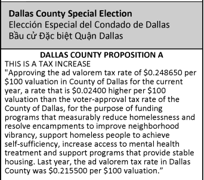

County Prop A · not a bond
County Prop A: what it costs, what it pays for
2.4¢
Added per $100 of value

$103M
Raised each year (county estimate)
About $5 a month for a median Dallas County home (about $64 a year). No borrowing, no interest.
what you’ll see on your ballot:

Sources: Dallas County Sample Ballot; Dallas County tax rate election fact sheet